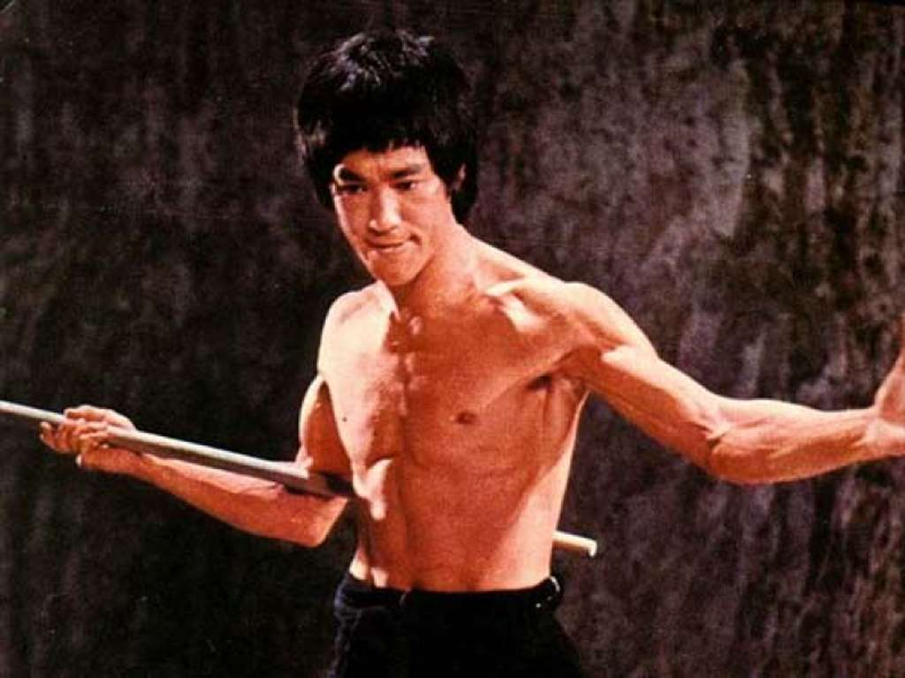

Bruce Lee
"If you spend too much time thinking about a thing, you'll never get it done."

1940:
Bruce Lee was born in San Francisco, CA on November 27th
1941:
At 3 months old, Lee appeared in his first film as a stand-in for Golden Gate Girl
1946:
Began to appear in roughly 20 films as a child actor
1953:
Lee began to study kung fu under the tutelage of Master Yip Man
1964:
Married Linda Emery
1965:
First-born son, Brandon is born
1969:
Daughter, Shannon is born
1966:
Appeared in the television series The Green Hornet as Hornet's sidekick, Kato
1971:
Confronted with limited roles and opportunities, Lee leaves the US for Hong Kong
1972:
Lee became a major movie star in Asia, thanks to prominent roles in Fists of Fury and The Chinese Connection
1973:
Just one month before the premiere of Enter the Dragon, Bruce Lee passes away in Hong Kong at the age of 32
To learn more about Bruce Lee, please visit his
Wikipedia
entry!